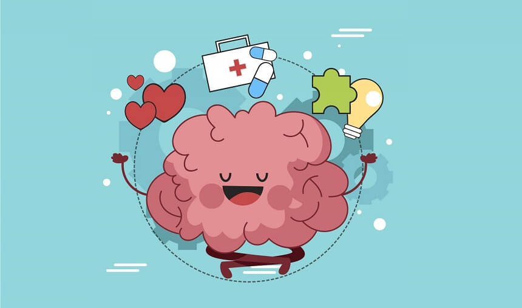

<!DOCTYPE html>
<html lang="pt-br">
<head>
    <meta charset="UTF-8">
    <meta http-equiv="X-UA-Compatible" content="IE=edge">
    <meta name="viewport" content="width=device-width, initial-scale=1.0">
    <title>Saúde e bem estar</title>
    <link rel="stylesheet" href="estilo.css">
    <link rel="shortcut icon" href="favicon.ico" type="image/x-icon">
</head>
<body>
    <header>
        <footer>
            <div class="container">
                <div class="footer-content">
        <nav>
            <div class="logo">
        
                <a href="index.html"></a>
            </div>
            <ul class="menu">
                <li><a href="index.html">Página Inicial</a></li>
                <li><a href="index.html#somos">Sobre Nós</a></li>
                <li><a href="index.html#dicas">Dicas de Saúde</a></li>
                <li><a href="receitas.html">Receitas Saudáveis</a></li>
                <li><a href="exercicios.html">Exercícios</a></li>
                <li><a href="saude_mental.html">Saúde Mental</a></li>
                <li><a href="contato.html">Contato</a></li>
            </ul>
        </nav>
    </header>
    <h1>Saúde e Bem Estar</h1>
    
    
 
    <div class="texto1">
    <h1>O que é saúde e bem estar?</h1>
    <p>Saúde e bem-estar são conceitos distintos, mas relacionados, que envolvem aspectos físicos, mentais e sociais. A Organização Mundial de Saúde (OMS) define saúde como "o estado do mais completo bem-estar físico, mental e social e não apenas a ausência de enfermidade". </p>
        <p>Já o bem-estar pode ser definido como a capacidade de uma pessoa suprir suas necessidades e se satisfazer com a vida. Ter saúde significa viver em um estado de mais completo bem-estar físico, mental e social. Para promover a saúde e o bem-estar, é importante adotar hábitos saudáveis, como ter uma dieta equilibrada, praticar atividades físicas, beber água, evitar o consumo de produtos industrializados e manter boas relações sociais.</p>
   
        

    <section id="somos">
    <p></p>
</section>
    
    <section id="dicas">
    <h1>Dicas de Saúde</h1>
    <p>Dicas de Saúde para uma Vida Plena e Equilibrada</p>

    <p>A saúde é um bem precioso que muitas vezes damos por garantido até que enfrentemos problemas. No entanto, adotar um estilo de vida saudável pode ser uma das melhores decisões que você pode tomar para garantir uma vida plena e equilibrada. Aqui estão algumas dicas abrangentes de saúde que abordam aspectos cruciais para o seu bem-estar:</p>
        
        <p> <b> 1. Nutrição Adequada:</b></p>
            <p> Uma alimentação equilibrada é a base de uma boa saúde. Certifique-se de consumir uma variedade de alimentos, incluindo frutas, vegetais, proteínas magras, grãos integrais e gorduras saudáveis. Evite o consumo excessivo de açúcar, gorduras saturadas e alimentos processados. Beba bastante água para manter seu corpo hidratado.</p>
        
        <p> <b>2. Exercícios Regulares: </b></p>
            <p> A atividade física é fundamental para manter um corpo saudável e um peso ideal. Dedique tempo para exercícios aeróbicos, como caminhadas, corridas, natação ou ciclismo, e também para o treinamento de força, para fortalecer músculos e ossos. Encontre uma atividade física que você goste e seja consistente.</p>
        
                <p> <b> 3. Sono de Qualidade: </b> </p>
                    <p>O sono é essencial para a recuperação e o funcionamento adequado do corpo. Tente dormir de 7 a 9 horas por noite, mantenha um ambiente de sono confortável e evite a exposição à luz azul antes de dormir.</p>
        
                        <p> <b>4. Gerenciamento de Estresse: </b></p>
                            <p>O estresse crônico pode ter efeitos prejudiciais à saúde. Pratique técnicas de gerenciamento de estresse, como meditação, ioga, respiração profunda e passatempos relaxantes. Estabeleça limites e evite a sobrecarga de trabalho.</p>
        
                                <p> <b> 5. Relacionamentos Sociais: </b></p>
                                    <p>Manter relacionamentos sociais saudáveis ​​é importante para o bem-estar emocional. Cultive amizades e conexões significativas. Compartilhar momentos com entes queridos pode trazer alegria e apoio emocional.</p>
        
                                        <p> <b> 6. Exames Médicos Regulares: </b> </p>
                                            <p>Visitas regulares ao médico são essenciais para detectar e prevenir problemas de saúde precocemente. Faça exames de rotina, como exames de sangue, verifique a pressão arterial e mantenha em dia as vacinações recomendadas.</p>
        
                                                <p> <b>7. Evitar Tabaco e Álcool em Excesso: </b> </p>
                                                    <p>O tabagismo e o consumo excessivo de álcool estão associados a várias doenças graves. Se você fuma, procure ajuda para parar. Se beber álcool, faça-o com moderação.</p>
        
                                                        <p> <b> 8. Higiene Pessoal: </b> </p>
                                                            <p>Boa higiene pessoal, como lavar as mãos regularmente e manter uma boa higiene bucal, é fundamental para prevenir infecções e doenças.</p>
        
                                                                <p><b> 9. Manter um Peso Saudável: </b> </p>
                                                                    <p>Manter um peso saudável é crucial para a prevenção de doenças crônicas, como diabetes e doenças cardíacas. Consulte um profissional de saúde para determinar qual é o peso ideal para você e estabeleça metas realistas.</p>
        
                                                                        <p><b> 10. Mentalidade Positiva: </b> </p>
                                                                            <p>Mantenha uma mentalidade positiva e pratique a gratidão. O pensamento positivo pode ter um impacto significativo na sua saúde mental e emocional.</p>
        
                                                                                <p>Lembre-se de que a saúde é uma jornada contínua. Pequenas mudanças positivas em seus hábitos diários podem fazer uma grande diferença ao longo do tempo. O acompanhamento regular com profissionais de saúde, como médicos, nutricionistas e psicólogos, pode fornecer orientações personalizadas para suas necessidades específicas. Priorizar sua saúde é um investimento no seu futuro e na qualidade de vida. Portanto, comece hoje mesmo a adotar essas dicas de saúde e aproveite os benefícios de uma vida plena e equilibrada.</p>
    </section>

</div>

<footer class="Mature">
    <div class="footer-text">
        &copy; 2023 Seu Site de Saúde e Bem-Estar. Feito por: Luiz, Lucas.M, João, Renan.
    </div>
</footer>
</div>
</footer>
</body>
</html>


